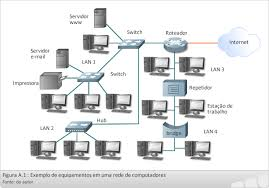
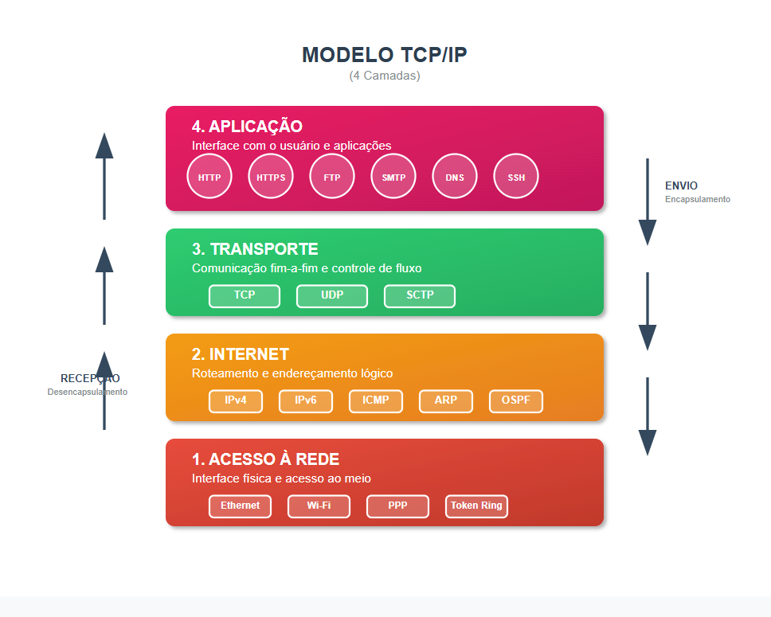
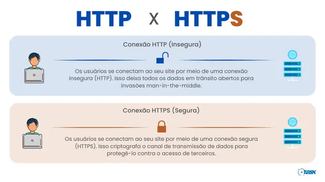

.png)
Introdução:
As redes de computadores estão presentes em praticamente todos os aspectos da vida moderna, permitindo a comunicação entre dispositivos, o compartilhamento de informações e o acesso à Internet. Compostas por uma variedade de tecnologias, protocolos e estruturas físicas, elas formam a base que sustenta desde pequenas redes domésticas até a grande rede mundial. Compreender seus componentes, modelos de funcionamento e os principais protocolos que regem a troca de dados é essencial para entender como a informação circula globalmente e como aplicações e serviços digitais operam de forma integrada e segura.
O que são Redes de Computadores?
Redes de computadores são estruturas formadas por dois ou mais dispositivos interconectados para compartilhar informações, recursos e serviços. Esses dispositivos podem trocar dados por meios físicos (cabos) ou por comunicação sem fio. Elas permitem acesso à Internet, compartilhamento de arquivos, impressão em rede, comunicação entre sistemas e aplicações distribuídas.
O que é uma Rede mínima?
Uma rede mínima é a estrutura mais simples possível de uma rede de computadores. Consiste em dois dispositivos conectados de forma direta (via cabo ou Wi-Fi), possibilitando apenas o essencial: comunicação e troca de informações entre eles. É a base para todos os modelos maiores de redes.
O que é a internet? O que compõe?
A Internet é uma rede mundial de redes, responsável por interligar bilhões de dispositivos ao redor do planeta. Ela funciona por meio de uma enorme infraestrutura física e lógica.
A Internet é composta por:
*Redes locais e redes de provedores de Internet
*Servidores de conteúdo (sites, serviços, aplicações)
*Cabos de fibra óptica terrestres e submarinos
*Satélites e enlaces de rádio
*Roteadores e switches de longa distância
*Sistemas Autônomos (AS) que controlam roteamentos
*Protocolos padronizados (especialmente TCP/IP)
*Centros de dados (datacenters)
Ela funciona de forma descentralizada e segue normas globais de comunicação.
O que é web?
A Web (World Wide Web) é um serviço que funciona dentro da Internet. Ela é formada por páginas e aplicações acessadas por navegadores utilizando protocolos como HTTP e HTTPS. A Web não é a Internet; ela é apenas uma parte dela, assim como e-mail, streaming, jogos online e outras aplicações.

O que é o mapa de fibra óptica?
O mapa de fibra óptica representa a infraestrutura mundial de cabos responsáveis por transportar a maior parte dos dados da Internet.
Ele mostra:
Cabos submarinos que atravessam oceanos
Cabos terrestres de longa distância
Pontos de aterragem e centros de conexão
Interligações entre continentes
Esses cabos são essenciais para o funcionamento global da Internet.

Quais os componentes de hardware de uma rede wi-fi?
Uma rede Wi-Fi utiliza os seguintes elementos:
*Roteador Wi-Fi ou Access Point: dispositivo que recebe o sinal da Internet e distribui via ondas de rádio.
*Antenas Wi-Fi: responsáveis por transmitir e receber sinais sem fio.
*Placas de Rede Sem Fio (Wi-Fi adapters): presentes em notebooks, celulares e computadores, permitem a comunicação com o roteador.
*Extensores ou repetidores Wi-Fi: ampliam a área de cobertura da rede.
*Roteadores Mesh (em redes modernas): vários pontos interligados para maior alcance e estabilidade.

Quais os componentes de hardware de uma rede local com cabo de rede?
Uma rede local com cabos depende de:
*Switch: distribui a conexão entre vários dispositivos.
*Roteador: conecta a rede local à Internet.
*Cabos de Rede Ethernet (CAT5e, CAT6, CAT7): realizam a transmissão física dos dados.
*Conectores RJ-45: conectam os cabos aos equipamentos.
*Placas de Rede Ethernet: presentes nos dispositivos para comunicação via cabo.
*Patch Panel e Rack (em redes estruturadas): organizam e distribuem os cabos de forma profissional.

O que é um protocolo de comunicação?
É um conjunto de regras que define:
*Como os dispositivos enviam dados
*Como os dados são recebidos
*Como os erros são tratados
*Como as mensagens são interpretadas
Os protocolos garantem que diferentes dispositivos, de fabricantes variados, consigam se comunicar entre si.
O que é o modelo OSI?
O modelo OSI (Open Systems Interconnection) é um modelo conceitual dividido em 7 camadas, criado para padronizar o funcionamento das redes e explicar como a comunicação ocorre.
As camadas do OSI representam:
*Tratamento físico dos sinais
*Endereçamento e roteamento
*Controle de erros e transporte
*Sessões de comunicação
*Tradução de dados
*Serviços de aplicação
Embora não seja aplicado diretamente na Internet, ele serve para estudos e entendimento geral das redes.

O que é modelo TCP/IP?
É o modelo real, utilizado pela Internet e por praticamente todas as redes do mundo.
Ele é dividido em 4 camadas e é baseado no conjunto de protocolos TCP/IP.
O TCP/IP define:
*Como os dados são enviados de um ponto ao outro
*Como são roteados pela rede
*Como são fragmentados e reconstruídos
*Como as aplicações acessam a rede
É mais simples e prático que o OSI e serve como base da comunicação global.

O que é o protocolo IP V4 ? e o IP V6?
Protocolo IP V4:
O IPv4 (Internet Protocol versão 4) é a versão mais utilizada do protocolo IP.
Características:
*Endereços de 32 bits
*Cerca de 4,3 bilhões de endereços possíveis
*Amplamente adotado em toda a Internet
*Necessita técnicas como NAT para ampliar seu uso devido à limitação de endereços
Protocolo IP V6:
O IPv6 foi criado para substituir o IPv4 devido à falta de endereços.
Características:
*Endereços de 128 bits
*Quantidade praticamente ilimitada de endereços
*Melhor segurança nativa
*Melhor suporte para mobilidade e IoT
*Convivência com IPv4 por meio da dupla pilha (dual stack)

Como é configurado o IP e o TCP em uma programação backend com node.js?
Em aplicações backend, o Node.js utiliza a pilha TCP/IP do sistema operacional.
Isso significa que:
*O IP não é configurado manualmente no código
*O sistema define o endereço local e o roteamento
*O backend apenas escolhe a porta que irá utilizar
*A comunicação TCP é gerenciada automaticamente pela pilha de rede
O servidor backend define onde ficará “escutando”, enquanto o SO se encarrega de toda a comunicação de baixo nível.
O que é o protocolo HTTP? E o HTTPS ?
HTTP:
HTTP (HyperText Transfer Protocol) é o protocolo usado pela Web.
Ele define como navegadores e servidores trocam mensagens, estruturam requisições, respostas, cabeçalhos e dados.
É um protocolo de camada de aplicação e funciona sobre TCP/IP.
HTTPS:
HTTPS é a versão segura do HTTP.
Ele utiliza:
Certificados digitais
Criptografia SSL/TLS
Autenticação de servidor
Transmissão segura dos dados
É essencial para segurança em sites, bancos, lojas virtuais e qualquer comunicação sensível.

Cite exemplo de um framework para programação do protocolo HTTP com uso do node.js?
O framework mais utilizado é o Express.js, responsável por:
*Criar servidores HTTP
*Gerenciar rotas
*Tratar requisições e respostas
*Construir APIs
*Integrar middlewares
Também existem outros, como Fastify, Hapi e NestJS.
Exemplos de código Backend para troca de mensagens entre front e backend.
Exemplos de Códigos com Node.js (Express)
Código de POST mensagem
// Node.js (Express)
const express = require("express");
const app = express();
app.use(express.json());
app.post("/mensagem", (req, res) => {
const texto = req.body.texto;
res.json({ resposta: "Mensagem recebida: " + texto });
});
app.listen(3000);
Código de Salvar mensagens em uma lista (simulação de banco)
// Node.js - Armazenando mensagens em memória
const express = require("express");
const app = express();
app.use(express.json());
let mensagens = [];
app.post("/enviar", (req, res) => {
const texto = req.body.texto;
mensagens.push(texto);
res.json({ status: "OK", total: mensagens.length });
});
app.get("/listar", (req, res) => {
res.json({ mensagens });
});
app.listen(3000, () => console.log("API ativa"));
Código de Rotas separadas simulando chat
// Node.js - Rotas separadas (simulando chat)
const express = require("express");
const router = express.Router();
const app = express();
app.use(express.json());
router.post("/enviar", (req, res) => {
const msg = req.body.msg;
res.json({ resposta: "Servidor respondeu: " + msg });
});
router.get("/status", (req, res) => {
res.json({ online: true, horario: new Date() });
});
app.use("/api", router);
app.listen(3000, () => console.log("Sistema de mensagens online"));
Navegação: